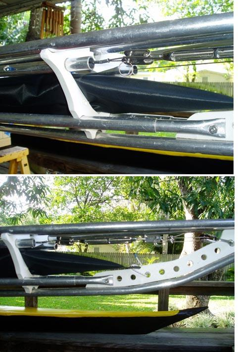

| Additional Frame Stiffness | Menu Last Page Next Page |
|  |
Frame Tensioning Cables
Hastings Read required additional stiffness in his Sea Rider frame and installed
a set of tensioning cables routed through the inwale tubes. His description follows. "Using a SS shackle I attached a small Harken pulley at each stem. I then threaded SS wire through the inwales and round the pulleys to a turnbuckle at the stern (there is more room at the bow, but it makes it easier to adjust by peeling back the skin; the reverse would be true for a foredeck zip). I put quite a bit of tension on the turnbuckle using gear with a 1400 lbs. breaking strain. Should the cable break, it's enclosed in the inwale so should prevent injury. It's easy to install. The only downside is that good quality hardware isn't cheap. The turnbuckle was about $24. The pulleys $8.00 each and the shackles $5-00 each and the wire was 69c a foot. Total cost about $85. It's all available in the rigging department at West Marine." |